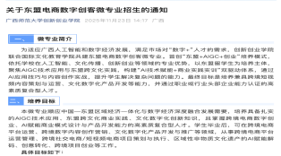
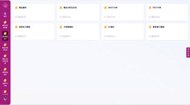
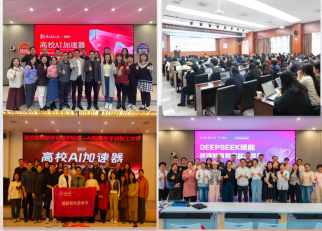
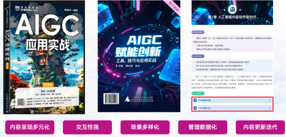
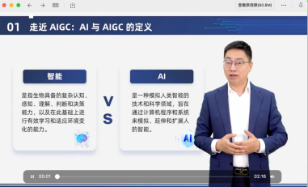

连续两年为广西师范大学创新创业学院“人工智能+教师教育"融合创新提供咨询、技术支持及人员培训
《大学生创新创业基础》课程升级、教学平台升级、师生培训


AI 数字人慕课
桂教通AI 教学智能体
AI 双创工作平台
东盟电商数字创客微专业）
《AIGC赋能创新实战》入选广西高校人工智能通识课“交叉融合”案例



累计1.8万+册
校内第一门AIGC通识课（双师授课）
AI赋能工作坊（六期）
AI产教融合专业共建
校内第一本AIGC通识教材